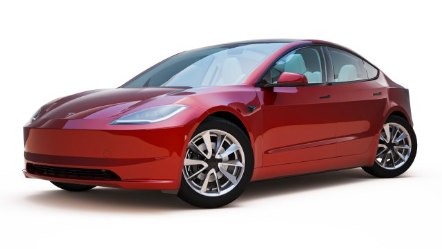

O Tesla Model 3 2024 é um carro elétrico produzido pela Tesla. Ele foi atualizado em 2024 com uma série de modificações, incluindo um visual renovado e uma maior autonomia. O carro está mais leve, pesando cerca de 1,76 toneladas1 e tem uma autonomia de até 677 km. O modelo também apresenta novas cores, como o Ultra Red e o Stealth Gray, e um novo design de roda com vários raios .
Uma curiosidade interessante sobre o Tesla Model 3 2024 é que ele é o carro elétrico mais vendido da Tesla e é considerado um dos carros elétricos mais populares do mundo 1. Além disso, o Tesla Model 3 2024 é capaz de acelerar de 0 a 100 km/h em apenas 3,5 segundos1.
O Tesla Model 3 2024 está inovando no mercado de carros elétricos com sua maior autonomia e design renovado. Além disso, a Tesla é conhecida por seus avanços em tecnologia de bateria e sistemas de condução autônoma